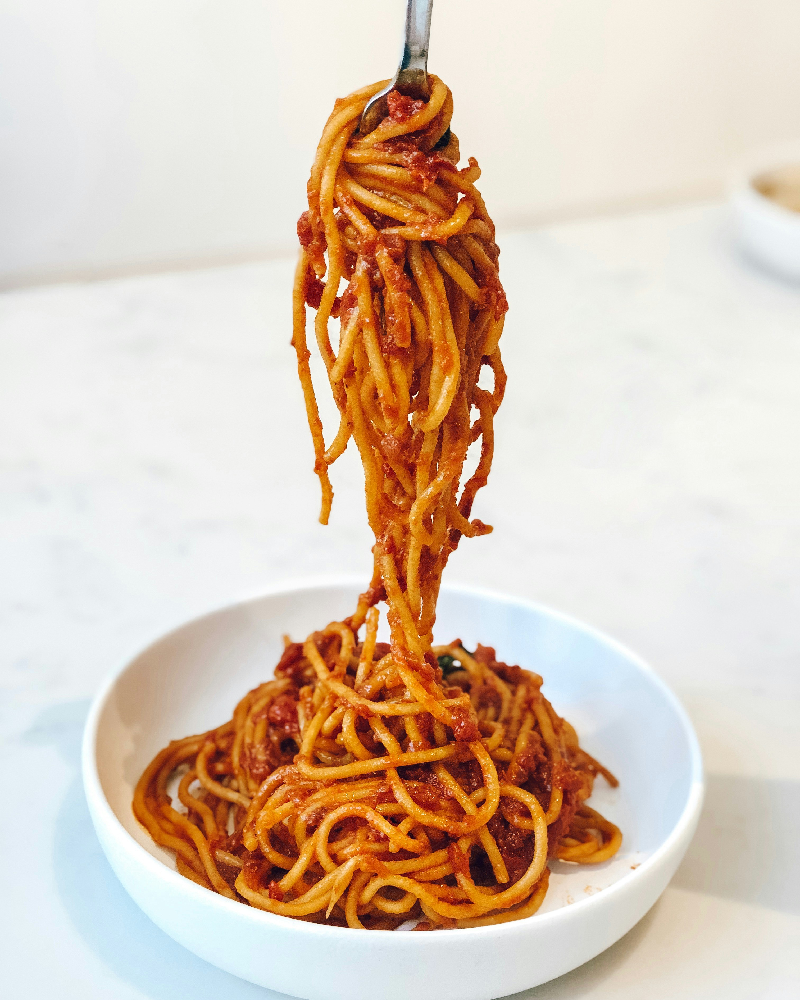

Spaghetti bolognese

Description
Spaghetti Bolognese is a globally popular comfort dish featuring
long-strand pasta (spaghetti) paired with a rich, slow-cooked meat-based
tomato sauce (ragù)
Ingredients
- 1 (16 ounce) package spaghetti
- 2 tablespoons olive oil
- 3 strips bacon, diced
- 1 large onion, finely chopped
- 1 stalk celery, finely chopped
- 1 carrot, finely chopped
- 1 teaspoon dried oregano
- 3 cloves garlic, minced
- 1 pound lean ground beef
- 2 tablespoons balsamic vinegar
- 2 (28 ounce) cans crushed tomatoes
- 2 tablespoons tomato paste
- 2 teaspoons white sugar
- salt and ground black pepper to taste
- 2 tablespoons chopped fresh basil
- ¼ cup freshly grated Parmesan cheese
Steps
- Gather all your ingredients.
-
Cook sausage, ground beef, onion, and garlic in a Dutch oven over medium
heat until well browned.
-
Stir in crushed tomatoes, tomato sauce, tomato paste, and water. Season
with sugar, 2 tablespoons parsley, basil, 1 teaspoon salt, Italian
seasoning, fennel seeds, and pepper. Simmer, covered, for about 1 ½
hours, stirring occasionally.
-
Bring a large pot of lightly salted water to a boil. Cook lasagna
noodles in boiling water for 8 to 10 minutes. Drain noodles, and rinse
with cold water.
-
In a mixing bowl, combine ricotta cheese with egg, remaining 2
tablespoons parsley, and 1/2 teaspoon salt.
- Preheat the oven to 375 degrees F (190 degrees C).
-
To assemble, spread 1 ½ cups of meat sauce in the bottom of a 9x13-inch
baking dish. Arrange 6 noodles lengthwise over meat sauce, overlapping
slightly. Spread with 1/2 of the ricotta cheese mixture. Top with 1/3 of
the mozzarella cheese slices. Spoon 1 ½ cups meat sauce over mozzarella,
and sprinkle with 1/4 cup Parmesan cheese.
-
Repeat layers, and top with remaining mozzarella and Parmesan cheese.
Cover with foil: to prevent sticking, either spray foil with cooking
spray or make sure the foil does not touch the cheese.
-
Bake in the preheated oven for 25 minutes. Remove the foil and bake for
an additional 25 minutes.
-
Let the lasagna rest at room temperature for about 15 minutes before
cutting; this helps it set and firm up.
Home